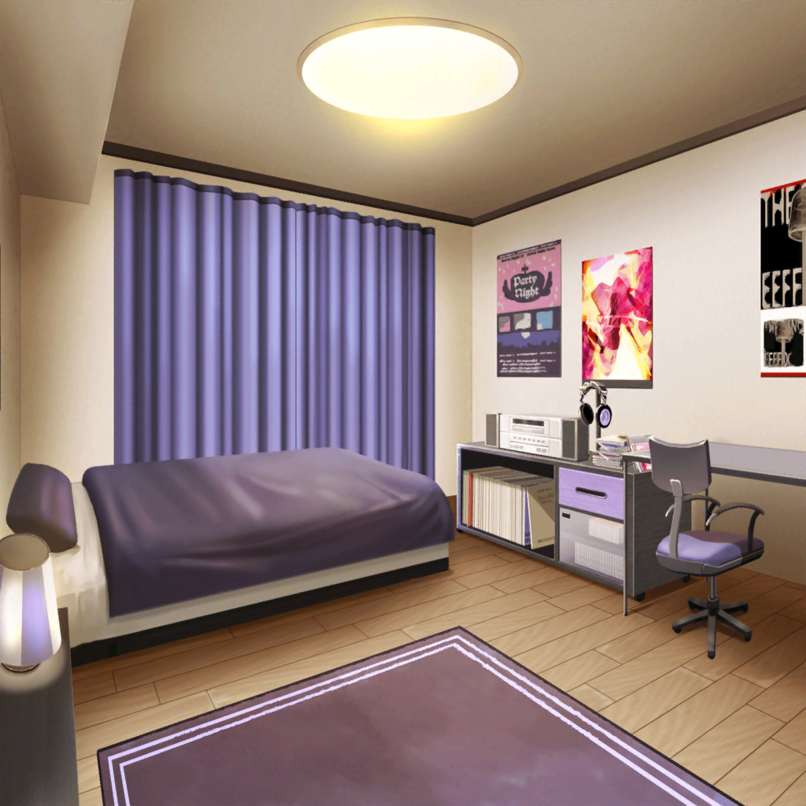
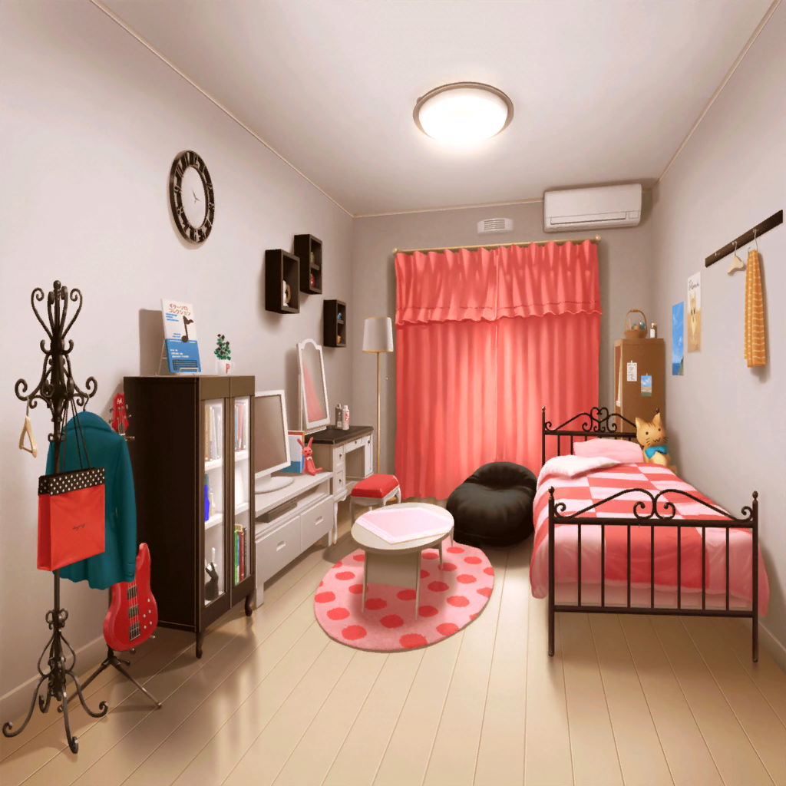

スタジオ
リサ
（どうしよう……
このままじゃRoseliaは、バラバラに……）
スタジオスタッフ
おーい。Roseliaさーん！
レンタル時間過ぎてるよ～
……って、リサちゃん１人！？
リサ
あ……っ。
え、もうそんな時間？ すみませんっ
スタジオスタッフ
リサちゃん、たしか今日は……バイトの日だっけ？
練習のあとにお疲れ様だねえ
リサ
あ……はは。そうですねっ。
ま、まあRoseliaの活動と運営の為にもっ、
がんばらないといけませんから～……

コンビニ
モカ
……っしゃーしたー
リサ
モカ……アンタ、いつにも増して挨拶テキトーすぎ
リサ
（……色々考えなきゃいけないんだけど
バンド組んでる同士、
こういうとこ、なごんで助かるんだよなぁ……）
リサ
……っと、友希那からだ。
——！！
友希那
『来週の練習予定、取り消す。
他のメンバーにも伝えたから』
リサ
（そんな……
来週以降はスタジオの予約してない……
じゃあ、その先って……）
モカ
湊さんって、リサさんの幼なじみなんでしたっけ？
リサ
えっ。あ、あーうんっ。
そ！ 家が隣同士でさ……
リサ
（ずっと一緒なのに、
なんでアタシは、もっと上手く……）
リサ
そっ、そういえば、モカと蘭も幼なじみなんだっけ？
モカ
まあ、一応……そう、なんですけど
リサ
（……あれ、この顔……？
モカもなにか、蘭のことで悩んでるのかな……）
リサ
そっか……なるほどね。
蘭も悩んでるんだ……
リサ
（Roseliaと似てる……
いや……アタシとモカが似てるんだ。
ずっとずっと……『見守るだけ』……）
リサ
……本当に大切なら、隣にいるだけじゃダメ……
間違った方向にいかないように導くのも
友達……ううん、親友の役目……なんだよ
モカ
隣にいるだけじゃ、ダメ……
リサ
アタシも友希那が幸せならって、ずっと見守ってきた。
もしかしたら間違ってるかもしれないって思いながら、ずっと。
……でもそれは、やっぱり間違いだったんだよね
リサ
（モカならきっと、大丈夫。
——アタシは……
今から、取りもどさなくちゃいけない）

湊家 友希那の部屋
友希那
（事務所からメッセージ……
はやく開封しなきゃいけないのに……）
リサ
『ゆっきな～！ 窓開けて！』
友希那
（何？ 急に……）
友希那
忙しいから無理
リサ
『寝っ転がって
何に忙しいのかな～？
カーテン空いてるぞ☆』
友希那
（……！ 隣のベランダから全部見えて……）
リサ
やっほー。
友希那の部屋に来るの、ひっさしぶりだな〜！
家が隣同士なんだから、友希那ももっとうちに来てもいいんだよ？
友希那
……毎日のように会ってるのに、なにか用？
リサ
ん……あのさ。
まずはごめんねっ。今回のスカウトのこと。
アタシ、なんにも気づけなかったや
リサ
家の前で、たまたま会った夜さ……
あれからきっと、友希那はずっとひとりで悩んでたんだよね。
アタシが気づけてたら、何か出来たんじゃないかって
友希那
…………
リサ
アタシ、友希那が幸せなら、とか言っておいて、
今まで……っ、なんっにも、してこなかったなぁ～って！
言うだけなら、いくらでも出来るっての、はは……
リサ
お父さんのことも、Roseliaもフェスのことも
ずっと友希那ひとりに背負わせて、ごめん！！
これからは、アタシももっと一緒に……
友希那
なんで……っ！！
リサ
え？
友希那
リサはなんで、いつもそうなの！！
なんで優しくするの！！ 全部、悪いのは私じゃない！！
私の自分勝手でこうなったことくらいわかってる！！
友希那
なのにバンドもフェスも……お父さんのことも！
リサは私が何をしても、笑って……
……いつも……そばにいて……っ
リサ
うん……ごめん……
友希那
だから……それをやめてってば！！
私は……っ、リサがいると……っ
ちゃんと音楽に向き合えない……っ！！
リサ
そ……っか。……ん。わかった。
アタシ……友希那のこと大切だから、
甘やかしちゃってたんだね……
リサ
そうすると、アタシに出来ることって
やっぱりないのかもしんないや。
……でもさ。フェスに出たいって、友希那の覚悟は知ってるよ？
リサ
……でも、５人で演奏してた時は、昔の……
友希那のお父さんと一緒にセッションしてた頃の
友希那が戻ってきたみたいで、すごく嬉しかった
友希那
……っ
リサ
少なくともアタシには、友希那が幸せそうに見えてた。
だから、もし迷ってるなら、今はRoseliaを捨てないで欲しい。
アタシの……ただの気持ちだけどねっ
友希那
……気持ちだけじゃ、音楽は出来ないわ
リサ
ん。そうだね。つきあってくれてありがと！
でも、全部言ったら、スッキリした！
アタシ、夕飯食べてくる。じゃっ☆
友希那
…………
友希那
……気持ちだけでは、音楽は出来ない……
友希那
（お父さんの代わりにフェスにでる。
その『気持ちだけ』で、私はやってきた……）
友希那
その私が……
『気持ちだけでは』……なんて……

リサの母
リサ～。ごはんよ～。降りてきなさ～い！
リサ
……ふぅ。
今いくーっ
リサ
（…………
……今アタシにできることは
たぶん、やれたはずだ）
リサ
（他にできることは、また考えていこう。
……こうやってまたぶつかっても、
ちゃんと、友希那と向き合い続けたい）